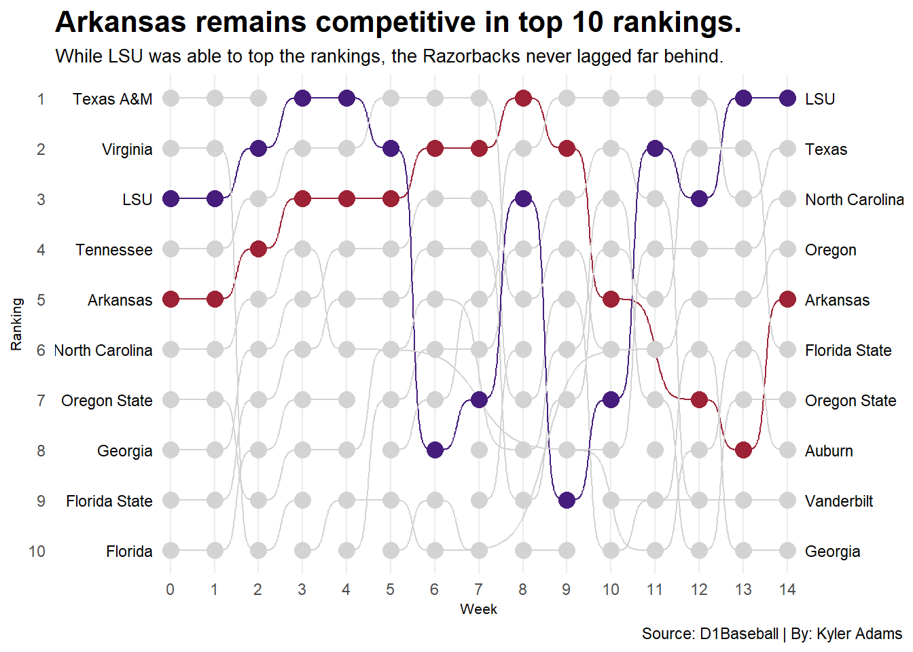
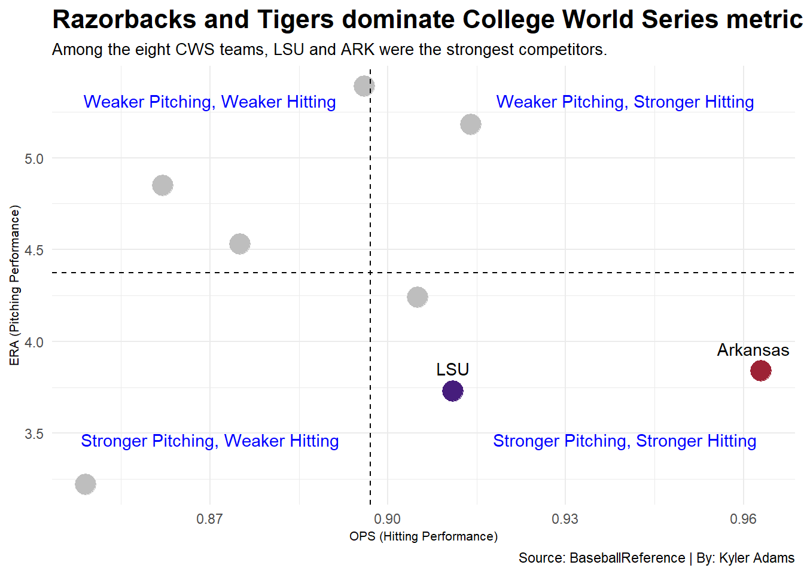

Woo Pig Phooey: An Analysis of Arkansas’ 2025 College World Series Run
baseball
ncaa
arkansas
Author
Kyler Adams
Published
November 17, 2025
Woo Pig Sooie. That is a sound commonly heard coming from every corner of Baum-Walker Stadium as the Arkansas Razorbacks play baseball every spring in Fayetteville, Arkansas. Though, the ballpark on 1255 South Razorback Road isn’t the only place you can hear thousands of fans chant those three words in perfect unison. The Hogs, as they’re also known by, tend to frequently migrate their way from the south up to the middle of America to spread their fandom in a city known as Omaha, Nebraska.
While the venue has changed over the years, if the Razorbacks are in town, it will be hard to not know that they have made their way back to compete in the Men’s College World Series. The team even adorns a new nickname when setting up shop in Charles Schwab Field, the “Omahogs.” While Arkansas is arguably an infamous name in the concourses of Charles Schwab, due to the blunder of the century in right field, their repeated appearances afterwards help mend the wound of a day that no one wants to remember back in 2018. 2025 was no different either, as the “Omahogs” and their fans came in droves to support the Razorbacks as they checked another ticket to return try and finally be able to stand on the podium as National Champions. However, a conference rival was looking to repeat the success they attained not two years prior.
From the onset of the 2024-2025 college baseball season, the Arkansas Razorbacks and LSU Tigers were shaping up to be top contenders and favorites to be part of the final eight that get to step foot in the Mecca of college baseball, Charles Schwab Field. Both teams were fighting tooth, tusk and nail to try and covet seven days at the top of the rankings during the regular season.
Code
library(tidyverse)
Warning: package 'ggplot2' was built under R version 4.5.2
── Attaching core tidyverse packages ──────────────────────── tidyverse 2.0.0 ──
✔ dplyr 1.1.4 ✔ readr 2.1.5
✔ forcats 1.0.0 ✔ stringr 1.5.2
✔ ggplot2 4.0.1 ✔ tibble 3.3.0
✔ lubridate 1.9.4 ✔ tidyr 1.3.1
✔ purrr 1.1.0
── Conflicts ────────────────────────────────────────── tidyverse_conflicts() ──
✖ dplyr::filter() masks stats::filter()
✖ dplyr::lag() masks stats::lag()
ℹ Use the conflicted package (<http://conflicted.r-lib.org/>) to force all conflicts to become errors
Warning in compute_group(...): 'StatBump' needs at least two observations per
group
Warning in compute_group(...): 'StatBump' needs at least two observations per
group

Code
#| include: falseggsave("image.png")
Saving 7 x 5 in image
Warning in compute_group(...): 'StatBump' needs at least two observations per
group
Warning in compute_group(...): 'StatBump' needs at least two observations per
group
During the regular season, the Tigers found themselves tied with the TExas Longhorns for the most weeks in the top spot of D1Baseball’s weekly rankings, though the Razorbacks weren’t one to not give lie down and yield in the fight to showcase their prowess on the diamond. Even with LSU seemingly finding themselves on the top of the world, the NCAA Selection Committee found themselves favoring the Longhorns and Hogs over their striped-conference brethern.
Code
NationalSeeds |>gt() |>cols_label(Team ="Team",Seed ="National Seed" ) |>tab_header(title="Razorbacks hold firm advantage over LSU during Regional Selection.",subtitle ="Both Arkansas and LSU found themselves as two potential SEC Super Regional hosts." ) |>tab_style(style =cell_text(color ="black", weight ="bold", align ="left"),locations =cells_title("title") ) |>tab_style(style=cell_text(color="black", align ="left"),locations=cells_title("subtitle") ) |>tab_source_note(source_note=md("Source: NCAA | By: Kyler Adams") ) |>tab_style(locations =cells_column_labels(columns=everything()),style=list(cell_borders(sides="bottom", weight=px(4)),cell_text(weight="bold", size=15) ) ) |>opt_row_striping() |>opt_table_lines("none") |>tab_style(style =list(cell_fill(color ="#9D2235"),cell_text(color="white") ),locations=cells_body(rows=Team=="Arkansas" ) ) |>opt_row_striping() |>opt_table_lines("none") |>tab_style(style =list(cell_fill(color ="#461D7C"),cell_text(color="white") ),locations=cells_body(rows=Team=="LSU" ) )
Razorbacks hold firm advantage over LSU during Regional Selection.
Both Arkansas and LSU found themselves as two potential SEC Super Regional hosts.
Team
National Seed
Vanderbilt
1
Texas
2
Arkansas
3
Auburn
4
North Carolina
5
LSU
6
Georgia
7
Oregon State
8
Florida State
9
Ole Miss
10
Clemson
11
Oregon
12
Coastal Carolina
13
Tennessee
14
UCLA
15
Southern Miss
16
Source: NCAA | By: Kyler Adams
Though the Longhorns and their fans fell of the new-found SEC bandwagon during the Austin Regional, Arkansas and LSU found themselves as the odd ones out, by conference numbers, as they were the only two SEC teams remaining heading into the showdown in Omaha. The fight for the tile of Sole Survivor within the SEC and, potentially, National Champion got underway post haste underneath the lights at Charles Schwab Field in the middle of June with both teams facing off against each other their first round. It was arguably a toss-up between who would be the victor as among the field of eight, the Tigers and Razorbacks found themselves to be nearly, if not the most, neutralizing each other out in terms of what each team found themselves to be more adept at pitching and hitting.
Code
ggplot()+geom_point(data=CWSOPSERA, aes(x=OPS, y=ERA), color ="grey", size=6) +geom_point(data=LSUOPSERA, aes(x=OPS, y=ERA), color ="#461D7C", size=6) +geom_point(data=ARKOPSERA, aes(x=OPS, y=ERA), color ="#9D2235", size=6) +geom_vline(xintercept =0.897, linetype="dashed")+geom_hline(yintercept=4.3725, linetype="dashed")+geom_text(aes(x = .87, y =5.31, label ="Weaker Pitching, Weaker Hitting"),color ="blue" ) +geom_text(aes(x = .87, y =3.465, label ="Stronger Pitching, Weaker Hitting"),color ="blue" ) +geom_text(aes(x = .94, y =5.31, label ="Weaker Pitching, Stronger Hitting"),color ="blue" ) +geom_text(aes(x = .94, y =3.465, label ="Stronger Pitching, Stronger Hitting"),color ="blue" ) +geom_text(data=LSUOPSERA, aes(x=OPS, y=ERA, label=Team), vjust=-1.2) +geom_text(data=ARKOPSERA, aes(x=OPS, y=ERA, label=Team), hjust=0.6, vjust=-1.2)+theme_minimal()+theme(plot.title =element_text(size =16, face ="bold"),plot.subtitle =element_text(size =10),axis.title =element_text(size =8) ) +labs(x ="OPS (Hitting Performance)",y ="ERA (Pitching Performance)",title ="Razorbacks and Tigers dominate College World Series metrics.",subtitle ="Among the eight CWS teams, LSU and ARK were the strongest competitors.",caption ="Source: BaseballReference | By: Kyler Adams" )

The Razorbacks found themselves on the back foot almost immediately as the Tigers had temporarily felled the Hogs, leading them to tend to their wounds as both teams had a rest day, although the former found themselves on the verge of elimination. With the victory over the Murray State Racers, Arkansas garnered another breath of fresh air before having to face a battered team, either the UCLA Bruins or LSU, as a thunderstorm had delayed the completion of the game the day prior, effectively throwing the losing team to the Hogs with little time to rest. Arkansas was able to raze what was remaining of the Bruins’ pitching staff, the Tigers once again stood as an ironclad knight, waiting to finally quell the now-battered wimper of “Woo Pig Sooie” that had once reverberated throughout the city of Omaha on a fateful Wednesday night.
With a crucial misplay reminiscent of an error committed years prior, once again the Arkansas Razorbacks found themselves obtaining defeat in the jaws of victory as the LSU Tigers were able to claim the title of Sole Survivor within the SEC and further their National Championship amount with a 2-0 series victory over the Coastal Carolina Chanticleers. The seeding within the College World Series and outcome of the first game brings the thought of questioning an alternative reality where the Razorbacks might have been able to bring out a win in the opening round and how these two closely matched teams might have fared if roles were reversed.